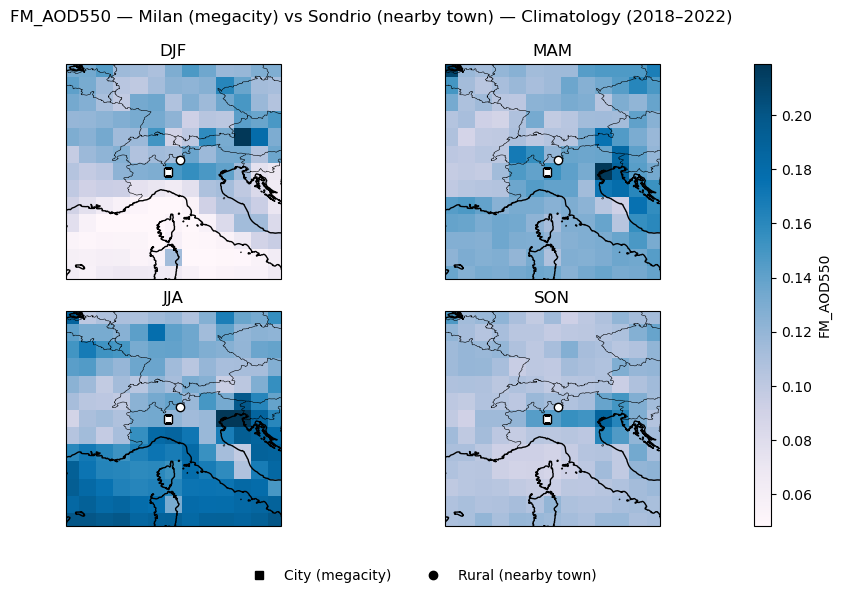
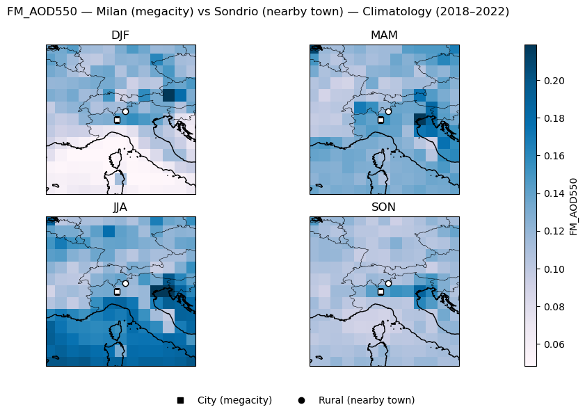

1.2.1. Assessment of the resolution capability of SLSTR AOD (1°) to identify pollution hotspots (2018–2022).#
Production date: 30-09-2024
Produced by: University of Salerno (UNISA)- (Fabio Madonna and Faezeh Karimian)
🌍 Use case: Identification of Pollution Hotspots#
❓ Quality assessment questions#
• Is there a difference in the aerosol optical depth (AOD) between megacities and nearby towns?
• How satellite AOD can be used as a proxy for local air pollution when comparing scales of tens of kilometers?
The satellite-aerosol-properties catalog provides global Aerosol Optical Depth (AOD) and fine-mode AOD (FMAOD) from 1995 to present. AOD is often used as a proxy for particulate pollution, but being representative of the entire atmospheric column and influenced by different sources at different atmospheric levels, may be not able to capture change in the local air pollution [1]. Moreover, several products are at horizonal resolutions coarser than what is required to capture local difference due to pollution sources. Europe, where most citizens are exposed to air pollution levels above WHO guidelines [2], provides a relevant and challenging case study for evaluating satellite-based aerosol observations. In this analysis we use the SLSTR ensemble product to produce seasonal maps of AOD and FMAOD over the investigated period, with major cities such as Milan, Brussels, London, and Athens marked for context. These maps provide a regional overview of spatial patterns and seasonal variability. In addition, we retain line plots only for selected hotspots (e.g., Brussels, Milan, London) to illustrate how AOD and FMAOD values evolve over time at the city scale and also to show the difference in the AOD and FMAOD between megacities and nearby towns. This combination of maps and targeted time series balances spatial coverage with local detail, while keeping the focus on how satellite products can inform—but also constrain—urban air-quality assessments.
📢 Quality assessment statement#
These are the key outcomes of this assessment
• The seasonal maps confirm broad regional patterns in AOD and FMAOD, with higher values in summer (JJA) and spring (MAM) and lower values in winter (DJF). This seasonal cycle is consistent with enhanced photochemical activity, transport of natural aerosols, and regional meteorology.
• Pairwise comparisons between megacities and their nearby towns reveal only modest differences. For Athens, mean AOD in the city is slightly higher than in Livadeia, but for Brussels, London, and Milan the rural sites often show equal or even slightly higher values.
• These small differences highlight that, at ~1° resolution, satellite AOD tends to represent regional-scale aerosol burdens rather than sharp urban hotspots. The fractional statistics support this: for example, Athens shows the city having higher AOD than the rural site in ~68% of months, while in Brussels and London the nearby towns often exceed the city.
• A small data gap is present for Northampton, which reduces the seasonal coverage. However, the available months are sufficient to capture the main seasonal cycle, so the results remain representative but should be interpreted with caution.
• Taken together, these findings emphasize the importance of scale and representativity. While satellite AOD products capture regional patterns and seasonality well, they cannot be expected to resolve contrasts between neighboring urban and rural sites at the scale of tens of kilometers.
📋 Methodology#
This assessment aims to assess the consistency and completeness of SLSTR-derived satellite data in capturing the seasonal variability of Aerosol Optical Depth (AOD) over different global regions from 2018 to 2023. We also quantifyed data completeness via monthly observation counts normalized by area, and test urban–rural contrasts using grid-aware neighborhoods.
The methodology adopted for the analysis is split into the following steps:
Choose the data to use and set up the code
Import all required libraries
Spatial and temporal definitions
Data Retrieval and Preparation
Download AOD data
Prepare the dataframe
Define required functions
Plot, calculation and describe the results
Pairwise monthly differences (city − nearby town)
Seasonal means (climatological) per pair
City–rural AOD and FM-AOD time-series plots
Seasonal AOD & FM-AOD maps (with city/rural markers)
Focused seasonal map plots of AOD550 and FM_AOD550 for megacity–town pairs
📈 Analysis and results#
Choose the data to use and set up the code#
Import all required libraries#
In this section, we import all the relevant packages needed for running the notebook.
Spatial and temporal definitions#
This assessment analyzes monthly SLSTR/Sentinel-3 AOD and FMAOD from July 2018 to December 2023, focusing on selected European megacities and their nearby towns. Four paired Areas of Interest (AOIs) are defined: Athens–Livadeia (Greece), London–Northampton (United Kingdom), Brussels–Arras (Belgium), and Milan–Sondrio (Italy). These AOIs are based on fixed latitude/longitude coordinates and represent typical urban–rural contrasts within ~100 km distance.
Data Retrieval and Preparation#
Below are robust, grid-aware functions and the city/rural time-series computation.
Download AOD data#
Found 66 .nc files
./aod_data/201801-C3S-L3_AEROSOL-AER_PRODUCTS-SLSTR-SENTINEL3A-ensemble-MONTHLY-v2.3.nc
./aod_data/201802-C3S-L3_AEROSOL-AER_PRODUCTS-SLSTR-SENTINEL3A-ensemble-MONTHLY-v2.3.nc
./aod_data/201803-C3S-L3_AEROSOL-AER_PRODUCTS-SLSTR-SENTINEL3A-ensemble-MONTHLY-v2.3.nc
./aod_data/201804-C3S-L3_AEROSOL-AER_PRODUCTS-SLSTR-SENTINEL3A-ensemble-MONTHLY-v2.3.nc
./aod_data/201805-C3S-L3_AEROSOL-AER_PRODUCTS-SLSTR-SENTINEL3A-ensemble-MONTHLY-v2.3.nc
time latitude longitude AOD550 FM_AOD550 \
0 2018-01-01 -89.5 -179.5 NaN NaN
43192 2018-01-01 29.5 172.5 0.123682 0.049830
43193 2018-01-01 29.5 173.5 0.116795 0.043411
43194 2018-01-01 29.5 174.5 0.188018 0.079148
43195 2018-01-01 29.5 175.5 0.058454 0.015076
... ... ... ... ... ...
4233604 2023-06-01 -29.5 -175.5 0.076325 0.047782
4233605 2023-06-01 -29.5 -174.5 0.069183 0.040526
4233606 2023-06-01 -29.5 -173.5 0.071204 0.041869
4233593 2023-06-01 -30.5 173.5 0.093562 0.054036
4276799 2023-06-01 89.5 179.5 NaN NaN
AOD550_UNCERTAINTY_ENSEMBLE NMEAS
0 NaN 0.0
43192 0.004982 6.0
43193 0.004510 4.0
43194 0.005259 3.0
43195 0.000400 1.0
... ... ...
4233604 0.017169 11.0
4233605 0.014429 12.0
4233606 0.013793 11.0
4233593 0.015986 6.0
4276799 NaN 0.0
[4276800 rows x 7 columns]
Prepare the dataframe#
Define required functions#
Seasonal means (climatological) per pair:
Plot, calculation and describe the results#
Pairwise monthly differences (city − nearby town)#
For each megacity–town pair, we computed monthly differences in AOD550 and FM_AOD550 by subtracting the nearby town value from the city value.
Pairwise monthly differences (city − nearby town):
pair variable mean_diff frac_city_gt (%) n_months
Athens (megacity) − Livadeia (nearby rural) AOD550 0.005 56.061 66
Athens (megacity) − Livadeia (nearby rural) FM_AOD550 0.001 51.515 66
London (megacity) − Northampton (nearby town) AOD550 0.037 65.152 66
London (megacity) − Northampton (nearby town) FM_AOD550 0.052 74.242 66
Brussels (megacity) − Arras (nearby town) AOD550 -0.021 24.242 66
Brussels (megacity) − Arras (nearby town) FM_AOD550 -0.031 19.697 66
Milan (megacity) − Sondrio (nearby town) AOD550 0.010 57.576 66
Milan (megacity) − Sondrio (nearby town) FM_AOD550 0.015 66.667 66
The results indicate that mean differences are generally small (within ±0.01–0.02), with Athens showing the most frequent positive city–rural contrast, while in Brussels, London, and Milan the rural sites often equal or exceed the city values.
Seasonal means (climatological) per pair#
For each megacity–town pair (Athens–Livadeia, London–Northampton, Brussels–Arras, Milan–Sondrio), seasonal climatological means of AOD550 and FM_AOD550 were computed.
AOD550 seasonal mean | Athens (megacity) vs Livadeia (nearby rural)
city rural
DJF 0.120 0.126
MAM 0.187 0.161
JJA 0.194 0.200
SON 0.155 0.141
FM_AOD550 seasonal mean | Athens (megacity) vs Livadeia (nearby rural)
city rural
DJF 0.090 0.107
MAM 0.144 0.127
JJA 0.174 0.173
SON 0.126 0.116
AOD550 seasonal mean | London (megacity) vs Northampton (nearby town)
city rural
DJF 0.115 0.106
MAM 0.207 0.141
JJA 0.196 0.169
SON 0.138 0.112
FM_AOD550 seasonal mean | London (megacity) vs Northampton (nearby town)
city rural
DJF 0.100 0.085
MAM 0.182 0.112
JJA 0.168 0.101
SON 0.115 0.084
AOD550 seasonal mean | Brussels (megacity) vs Arras (nearby town)
city rural
DJF 0.147 0.141
MAM 0.145 0.184
JJA 0.200 0.219
SON 0.138 0.155
FM_AOD550 seasonal mean | Brussels (megacity) vs Arras (nearby town)
city rural
DJF 0.129 0.120
MAM 0.113 0.160
JJA 0.132 0.174
SON 0.113 0.135
AOD550 seasonal mean | Milan (megacity) vs Sondrio (nearby town)
city rural
DJF 0.162 0.129
MAM 0.188 0.176
JJA 0.178 0.192
SON 0.171 0.137
FM_AOD550 seasonal mean | Milan (megacity) vs Sondrio (nearby town)
city rural
DJF 0.147 0.113
MAM 0.152 0.120
JJA 0.121 0.139
SON 0.144 0.112
These values summarize average conditions in winter (DJF), spring (MAM), summer (JJA), and autumn (SON), allowing a compact comparison of seasonal cycles between cities and their nearby towns. The results show that while absolute levels vary seasonally, the city–rural differences remain small in magnitude relative to regional and seasonal variability.
City–rural AOD and FM-AOD time-series plots#
Values of timeseries are area-weighted neighborhood averages with valid-pixel masking.
Figure 1. Monthly mean time series of AOD550 and FM_AOD550 for each megacity and its paired nearby town (Athens–Livadeia, London–Northampton, Brussels–Arras, Milan–Sondrio). Solid lines show the megacity, dashed lines the nearby town. These plots illustrate temporal variability.
Seasonal AOD & FM-AOD maps (with city/rural markers)#
Each panel shows seasonal means (DJF, MAM, JJA, SON) for total AOD and fine-mode AOD. Triangles mark city AOIs their rural references. These maps provide the regional context for the urban–rural time-series and enhancement analyses.
Figure 2. Seasonal AOD and Fine-Mode AOD (550 nm) over the Eastern Mediterranean, 2018–2023 (1°).
Focused seasonal map plots of AOD550 and FM_AOD550 for megacity–town pairs#
 

Figure 3. Focused seasonal map plots of AOD550 and FM_AOD550 for megacity–town pairs.
Take-Home Messages#
Seasonal cycles (e.g. summer peaks) dominate over city–rural differences.
Fine-mode AOD (fm_aod550) does not consistently show higher values over cities, highlighting the challenge of using satellite AOD as a direct proxy for local pollution.
Interpretation of urban–rural contrast in the AOD values requires caution, as meteorology, transport, and averaging effects can mask local signals.
A small data gap is present for Northampton due to SLSTR data unavailability; while this reduces seasonal coverage, the available records still capture the main seasonal cycle and trends.
ℹ️ If you want to know more#
Key Resources#
• Aerosol properties gridded data from 1995 to present derived from satellite observations:
https://cds.climate.copernicus.eu/datasets/satellite-aerosol-properties?tab=overview
Code libraries used:
• C3S EQC custom function, c3s_eqc_automatic_quality_control, prepared by B-Open
References#
[1] Hoff, R. M., & Christopher, S. A. (2009). Remote sensing of particulate pollution from space: have we reached the promised land? Journal of the Air & Waste Management Association, 59(6), 645–675. https://pubmed.ncbi.nlm.nih.gov/19603734/
[2] Air pollution: Nearly everyone in Europe is breathing bad air — Deutsche Welle (via Copernicus Health Hub)